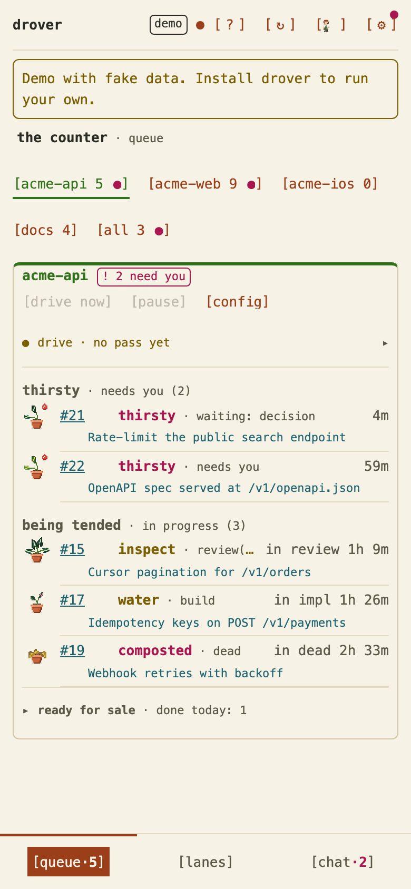
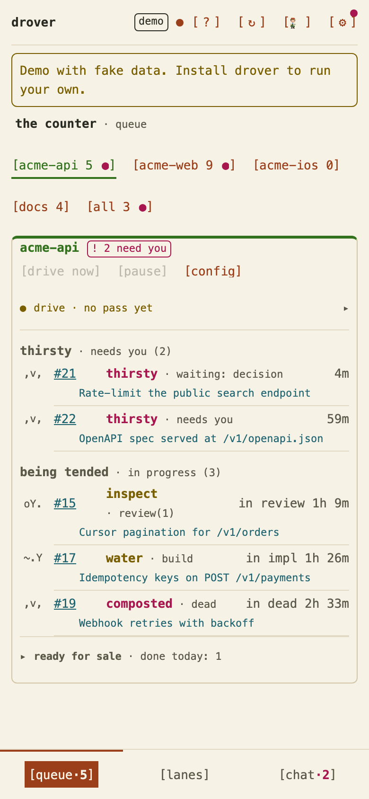
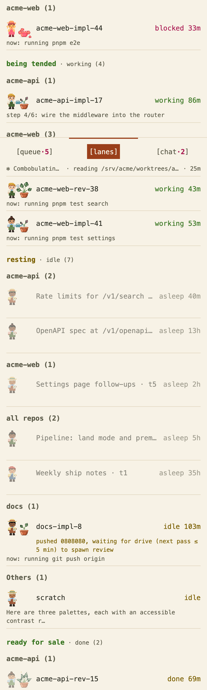
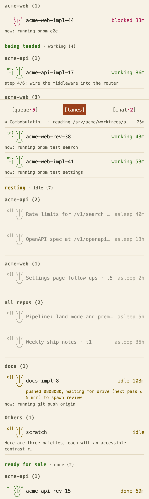
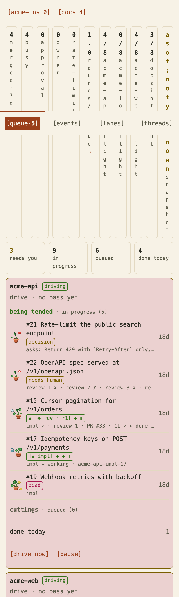
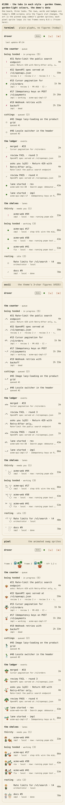

#1306 · the old board (c34235855~1) next to today's and the proposal · same demo data, garden, 390 wide
Old: the board #927 deleted, built from c34235855~1 and exported with serve --export --demo, shot by
shoot.mjs with localStorage mode = scene (pixel) or ascii. Today: the JSON-screens board in garden:
the plant sprites are there but still (no frame loop), Lanes has no keeper over the plant, Hosts no miniature, no moments.
old board

Queue · pixel: the stage's plant per issue, looping

Queue · ascii: ascii_rows

Lanes · pixel: keeper in its look over the plant

Lanes · ascii: ascii figures, two-frame gallop
today and the proposal

today · Queue in garden: still sprites; the terminal style keeps today's terminal-theme look

proposal · Queue, Events, Lanes in terminal, ascii, pixel (stacked at 390)